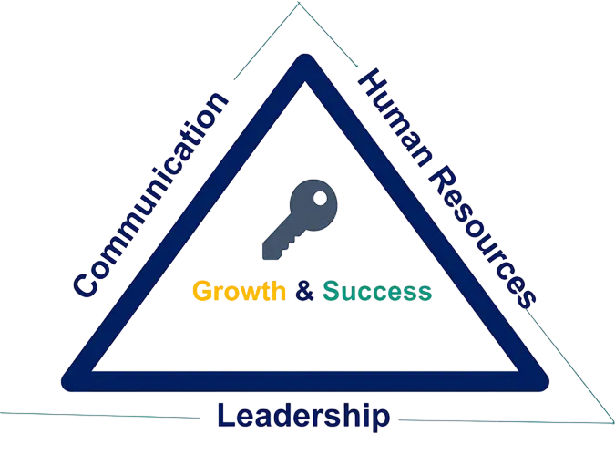

TRIANGLE MODEL L-C-H
Kepemimpinan merupakan fondasi yang sangat penting untuk menciptakan komunikasi yang efektif, serta pengelolaan sumber daya manusia. Kepemimpinan yang efektif membutuhkan keterampilan komunikasi yang kuat untuk menginspirasi, memotivasi, dan mengarahkan tim.
Komunikasi yang efektif mampu menciptakan lingkungan kerja yang inklusif dan meningkatkan keterlibatan karyawan.
Pengelolaan sumber daya manusia yang tepat, akan menciptakan calon pemimpin untuk mendukung tumbuhnya organisasi.
Leadership-Communication-Human Resources merupakan Kunci Pertumbuhan dan Keberhasilan